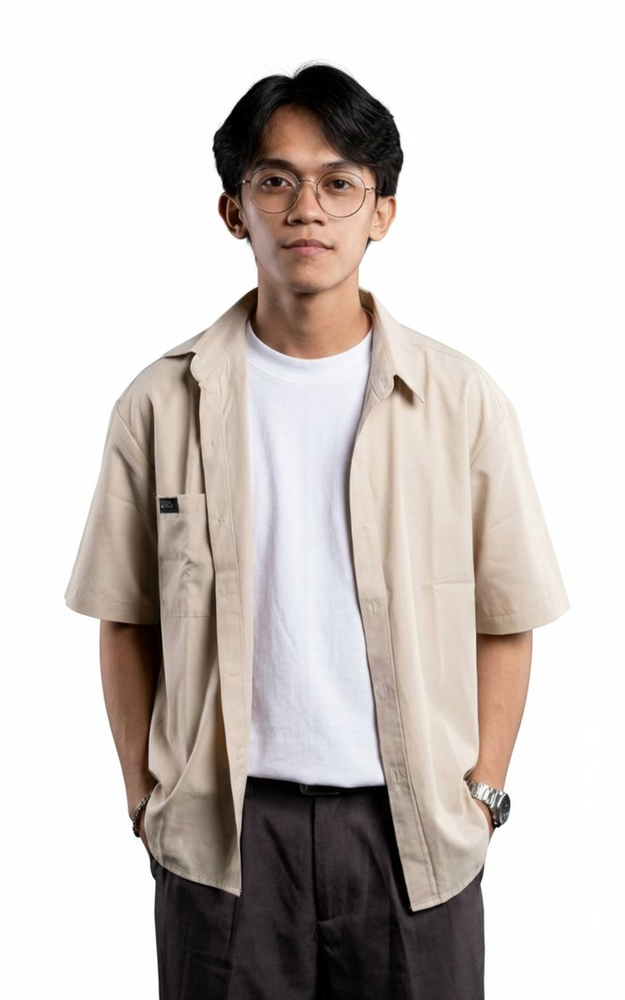

UI/UX Designer, Technical Writer & Database Designer — I help businesses stay organized and efficient by handling administrative tasks, managing digital workflows, and supporting day-to-day operations behind the scenes.

I don't just build the thing — I write down how it works, and make sure it looks like it was meant to.
Most of my work happens at the point where a system stops being code and starts being something a person actually has to use. That's what drew me to the Service Management track — it's less about writing a feature and more about whether anyone can figure out what it does.
That instinct got put to the test during my DOST internship, where I sat in on the same project from three angles: designing the interface, documenting how it worked, and structuring the database underneath it. Few things teach you how a system holds together like being responsible for all three at once.
Outside of that, I'm building two capstone-level systems of my own — BNS Assist and HandyHub — and picking up virtual assistance as a second track, applying the same documentation-first habits to scheduling, communication, and day-to-day coordination.
Three disciplines, one way of thinking.
End-to-end builds — front-end pages, back-end logic, and the MySQL structure underneath — the same stack behind BNS Assist and HandyHub.
Wireframes through to dev-ready prototypes, shaped by sitting on both sides of the handoff between design and build.
Admin and user manuals, process documentation, plus VA support — scheduling, workspace admin, and day-to-day coordination.
Worked across UI/UX design, technical writing, and database design for a financial reporting dashboard within a DOST-backed decision support system. Authored the administrator user manual covering setup, roles, and day-to-day operation.
A support system built for Barangay Nutrition Scholars to manage nutrition program records and reporting, reducing manual paperwork at the barangay level. Currently in documentation and testing.
A booking platform connecting users with service providers, built on the same full-stack foundation as BNS Assist — from schema design through to the booking flow itself.
A website concept designed to carry a restaurant's warmth online — an easy-to-browse menu, a clear reservation flow, and a layout built to feel welcoming rather than transactional.
"Working with Jerico was a smooth and enjoyable experience. The website design perfectly captured the warm and welcoming atmosphere of our restaurant while making it easy for customers to browse our menu and place reservations. The layout is clean, modern, and user-friendly. We've received many compliments on the design, and I'm very happy with the final result."
A booking-first website for a grooming and salon business, designed to keep the brand feeling professional while making appointment booking simple enough to need no explanation.
"I wanted a website that looked professional but was also simple for clients to navigate, and Jerico delivered exactly that. The UI/UX design reflects our brand well and makes booking appointments much more convenient. The attention to detail and overall user experience exceeded my expectations. I highly recommend his work."
Whether it's a full build, a design pass, or ongoing VA support — tell me what you need, and I'll take it from there.